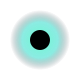

<!DOCTYPE html>
<html lang="en">
<head>
  <meta charset="UTF-8" />
  <title>Pulse Node</title>
  <link rel="stylesheet" href="pulse-node.css" />
</head>
<body>
  <div class="isk-pulse-node" data-state="breathing">
    <!-- Inline SVG reference -->
    <?xml version="1.0" encoding="UTF-8"?>
    <!-- You can also  if you prefer -->
    <svg
      class="isk-pulse-node-svg"
      viewBox="0 0 80 80"
      xmlns="http://www.w3.org/2000/svg"
      aria-hidden="true"
    >
      <defs>
        <radialGradient id="pulseGlow" cx="50%" cy="50%" r="50%">
          <stop offset="0%" stop-color="#7fffd4" stop-opacity="1" />
          <stop offset="60%" stop-color="#40e0d0" stop-opacity="0.6" />
          <stop offset="100%" stop-color="#1a1f2b" stop-opacity="0" />
        </radialGradient>
      </defs>

      <!-- Outer glow -->
      <circle
        class="isk-pulse-node-glow"
        cx="40"
        cy="40"
        r="30"
        fill="url(#pulseGlow)"
      />

      <!-- Core node -->
      <circle
        class="isk-pulse-node-core"
        cx="40"
        cy="40"
        r="10"
      />
    </svg>
  </div>
</body>
</html>
